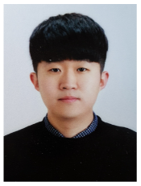

Profile
Name : 이영찬(Lee Young Chan)
Sex : male
Date of Birth : 1995.07.15
Email : dldudcks1779@naver.com
Activity
Post : Ready
Youtube : Ready
Project
1. Youtube Project
-
2. Contest Exhibit Project
-
3. Simple Project
4. Private Project
- Mask Wearing Judgment Project
- Android Streaming Client Project
- Smart-AP Project
- Stimulation Experiment Project
- Network Driver Project
Awards Career
1. 2019 DCU 소프트웨어 대전 SW 해커톤 아이디어톤 : 대상
2. 2020년 4월 네이버 이달의 블로그 선정 [생각을 코딩하다]
3. 전염병 문제 해결을 위한 제1회 2020 대구 경북 아이디어톤 : 최우수상[link]
Journals
1. [사물인터넷을 위한 신경망 기반의 지능형 액세스 포인트 시스템의 구현] Journal of Internet Computing and Services(KCI), Vol. 20, No. 5, pp. 95-104, Oct. 2019
2. [공공 WiFi 지역을 경유하는 경로 찾기 시스템 구현] Journal of Platform Technology(KCI), Vol. 8, No. 2, pp. 10-21, Jun. 2020
Papers
1. [WiFi를 활용한 무선 랜 구축 재난대응 로봇] 2020 Korean Institute of Communications and Information Sciences(KICS)
2. [딥러닝 모델을 활용한 실시간 어린이 교통사고예방 시스템] 2020 Korean Institute of Information Scientists and Engineers(KCC)
3. [신속한 대피를 위한 GPS, RSSI기반 지진 비상대피 안내 시스템] 2020 Korean Institute of Information Scientists and Engineers(KCC)